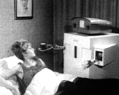

1966 erschien in der Science-Fiction-Zeitschrift "Tomorrow`s World" ein Bericht über die Roboter-Hausdame "Able Mabel". Damals dachte man, dass die Roboter-Technik in Kürze perfekt sein würde. "Able Mabel", so wurde berichtet, werde bald für alle Menschen verfügbar sein u. alles können, vom Geschirrspülen bis zum Gassi gehen mit dem Hund. Prof. Joseph Weizenbaum schrieb zwischen 1966-1967 ein Computer-Programm namens "Eliza", um die Sprachbeziehung zwischen Mensch und Maschine zu studieren. Eliza simulierte einen Psychotherapeuten, der auf jede Aussage mit einer Gegenfrage reagierte: Analysand: Die Menschen sind alle gleich. Eliza (Computer): In welcher Weise?/ Analysand: Sie nerven uns immerzu mit irgend etwas./ Eliza (Computer): Nennen Sie ein Beispiel!/ Analysand: Nun, mein Freund veranlasste mich herzukommen./ Eliza (Computer): Ihr Freund brachte Sie dazu herzukommen?/ Analysand: Er sagt, ich bin ziemlich oft depressiv...